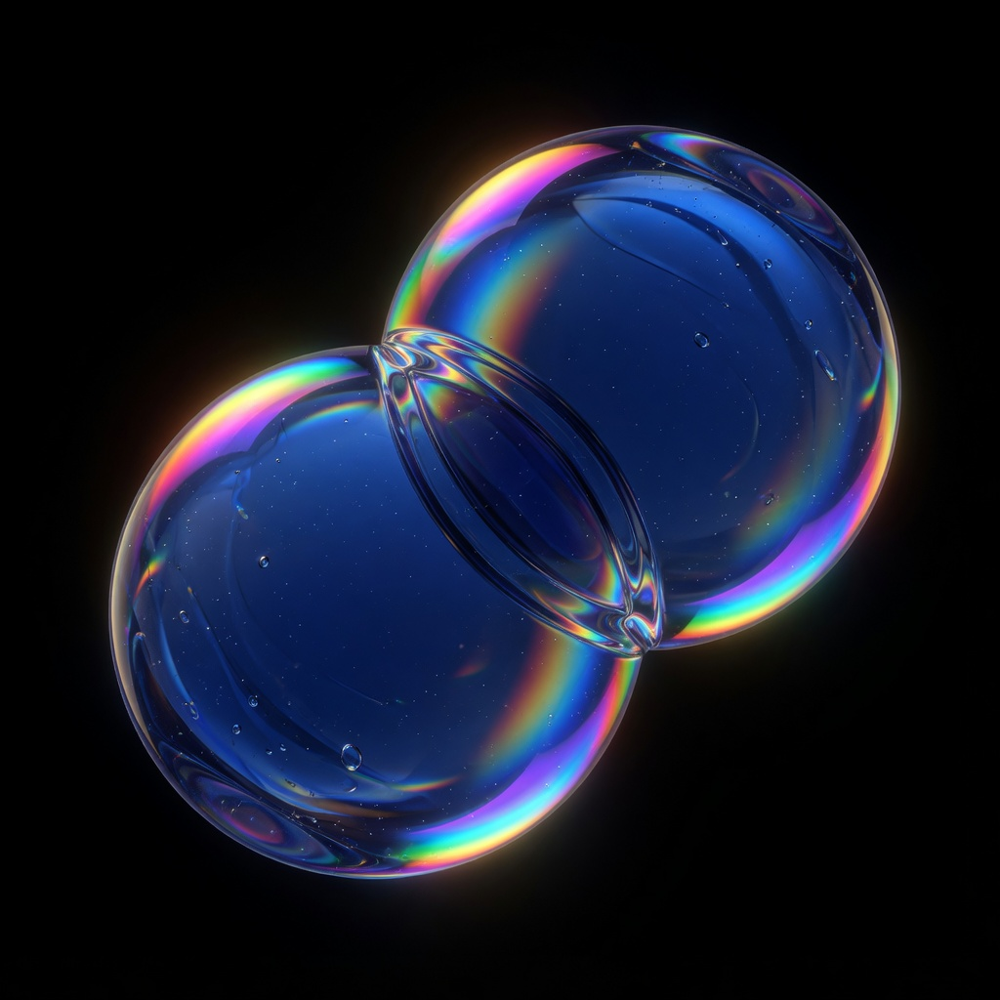

01
AI & intelligent products
Model strategy, applied ML, and human-centered interfaces for high-stakes workflows.
Global Technology Consulting & Digital Engineering

01 · What we do
From strategy through delivery — Auron helps teams ship reliable systems where AI, data platforms, and engineering discipline meet.
Model strategy, applied ML, and human-centered interfaces for high-stakes workflows.
Modern pipelines, governance, and analytics that executives can trust.
Cloud, platforms, and product engineering with security and scale built in.
02 · Who we are
Practitioners who have shipped inside regulated industries — calm under load, allergic to slideware without delivery.
03 · Resources
Patterns for incremental platform replacement without freezing the business.
Evaluation, monitoring, and documentation habits that regulators accept.
Procurement-aware delivery for multi-year transformation programs.
04 · Career
We’re hiring engineers, designers, and engagement leads who enjoy hard problems and clear writing.
View open roles →Tell us about the systems you’re modernizing.
Contact Us →
Hero glass orbs animated with
three.js
(MIT). The reference design was authored in Framer (closed); Three.js is the free/open
substitute for the 3D motion panel.